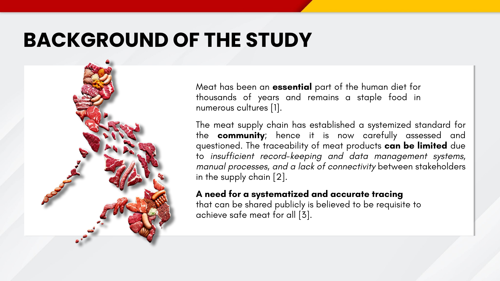
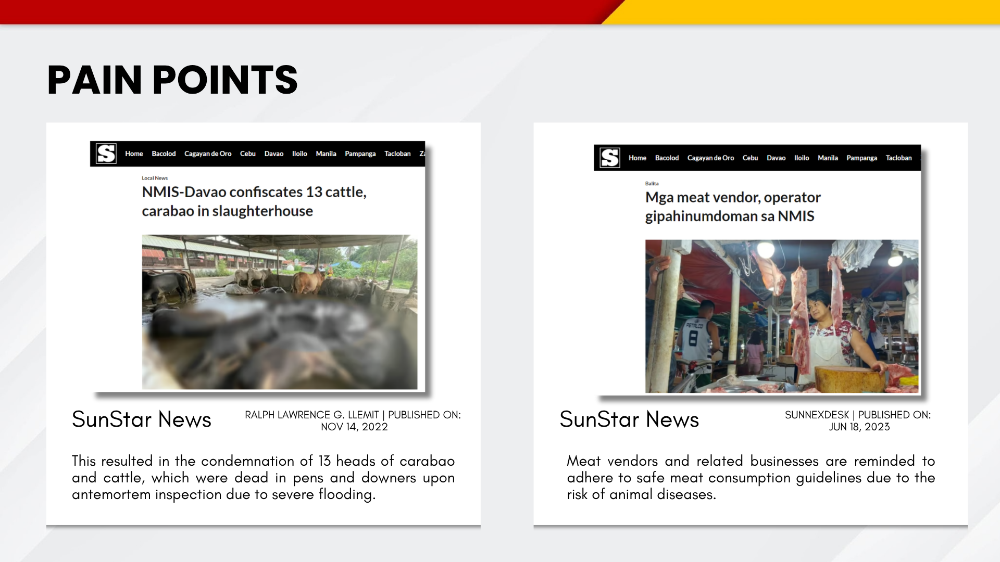
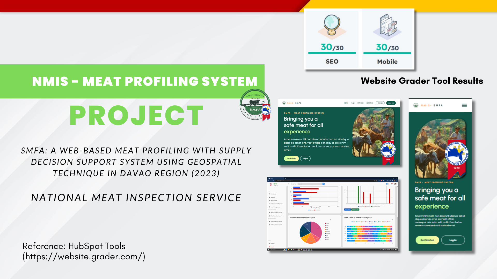

02 · GOVERNMENT PROJECT · DOST
NMIS Website.
A meat supply chain system built to support government operations through centralized data tracking, predictive analysis, and geospatial data visualization.

PROJECT CONTEXT
Safer meat through connected information.
The project addresses gaps in meat traceability caused by manual processes, incomplete record keeping, and weak connectivity between supply-chain stakeholders. It provides a public-facing experience together with data tools that help government teams organize and interpret meat-production information.
The supplied research materials frame the system as a web-based meat profiling and supply decision-support platform using geospatial techniques in the Davao Region.
SYSTEM CAPABILITIES
Data that supports public operations.
- Centralized profiling and tracking for meat supply-chain information.
- Geospatial views intended to make regional data easier to understand.
- Predictive and statistical analysis to support planning and decision making.
- Responsive public website designed for desktop, tablet, and mobile access.
- Traceability-focused information architecture for safer meat awareness.
- Administrative reporting and dashboard views for operational monitoring.
ATTACHED SCREENS
Research and product story
03 ADDITIONAL FRAMES



PROJECT DOCUMENT